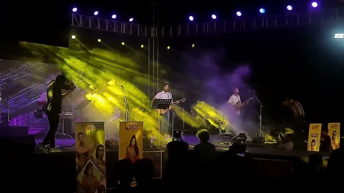

Experience the Magic of Oniros - MUJ's Annual Cultural Fest
Oniros is the cultural fest that every student looks forward to at Manipal University Jaipur (MUJ). The fest, aptly named after the Greek word for "dream," is a canvas for creativity, art, and culture, offering something for everyone in the MUJ community.
Oniros is the highly anticipated annual cultural fest at Manipal University Jaipur (MUJ). The name "Oniros" is derived from the Greek word for "dream," and it lives up to this by offering students a platform to turn their creative ideas into reality. The fest brings together students from various disciplines, with events ranging from music, dance, theater, and fashion shows to workshops and competitions.
This event provides a chance for students to not only showcase their artistic talents but also interact with experts from various fields. It is a blend of entertainment, learning, and cultural exchange, designed to foster creativity and collaboration. The fest typically features a range of performances, including live bands, dance competitions, and drama performances, as well as a variety of competitions for participants to engage in, like fashion shows and debates​
The excitement surrounding Oniros is palpable, as it allows MUJ students to step outside their academic routines and immerse themselves in an atmosphere of vibrant competition and celebration. It is organized with the participation of numerous student clubs and faculty, ensuring that every aspect of the event reflects the diversity and energy of the university community. Whether you're an art lover, a performer, or someone who enjoys the thrill of competition, Oniros has something for everyone.